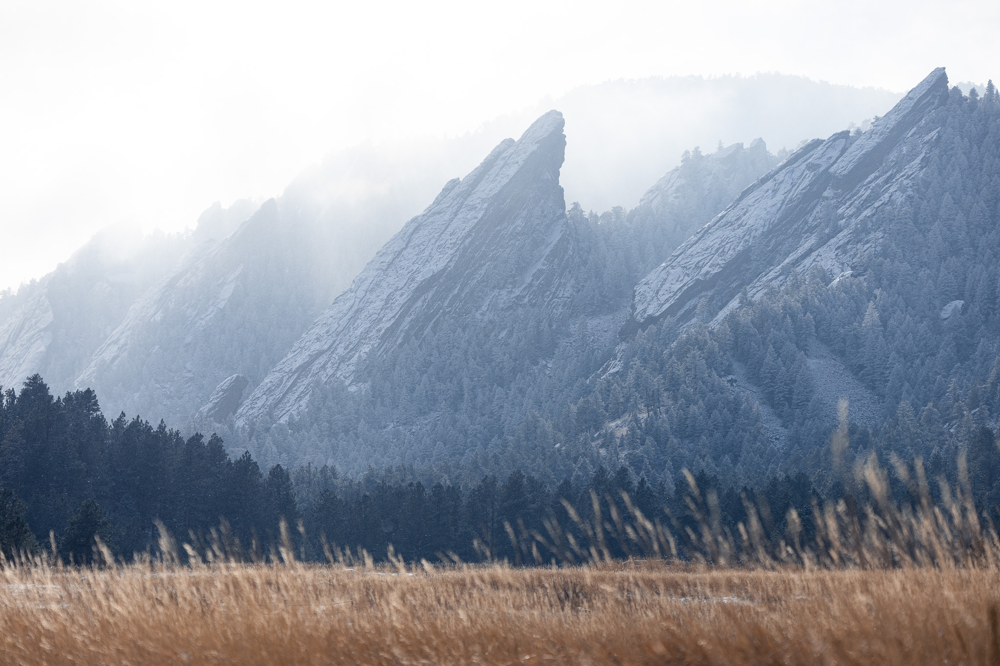
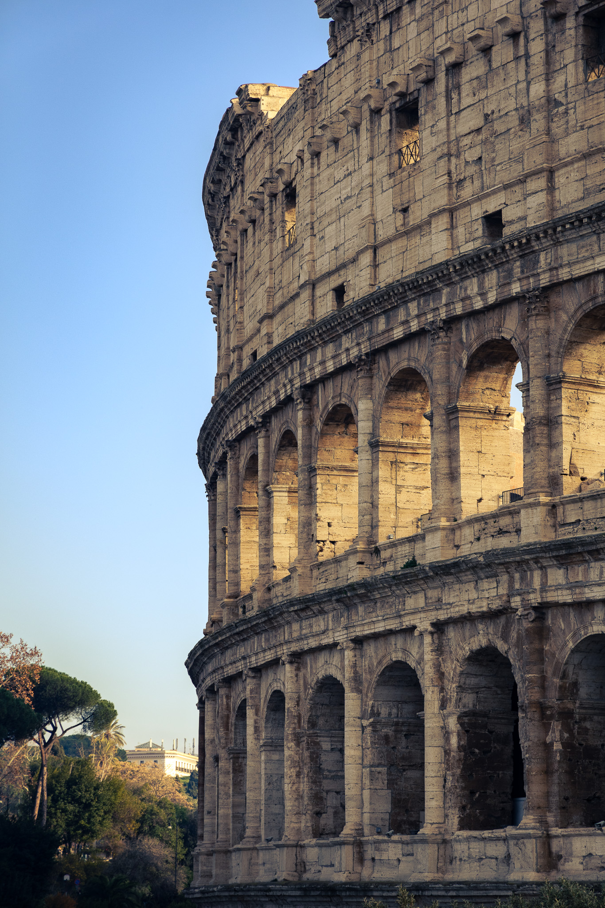
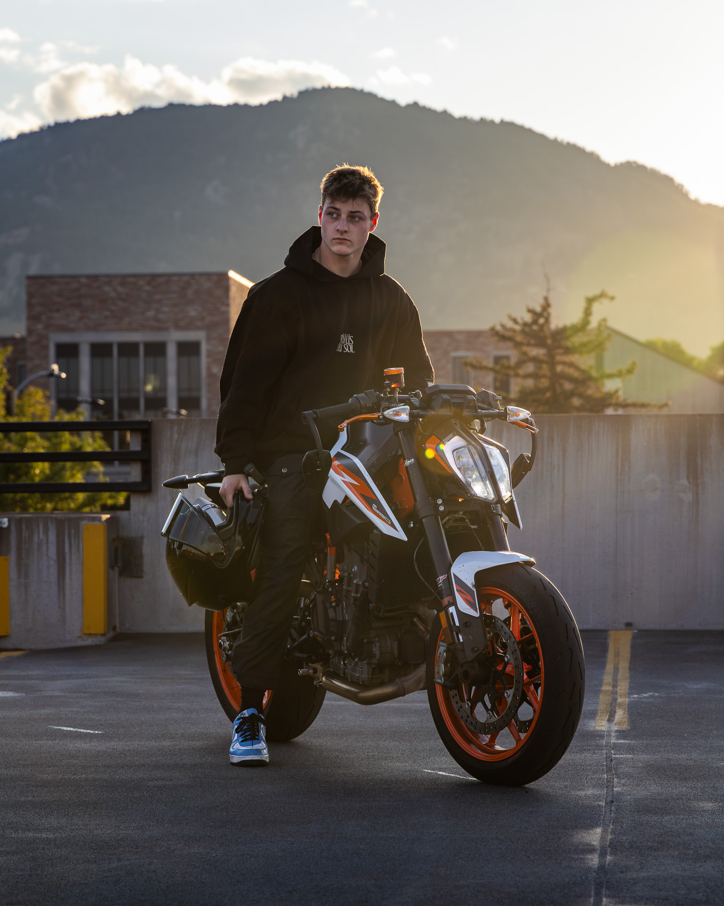

Landscape Photography
This is a photo of the Flat Irons. It had just snowed the night before and the result are a mystical, foggy, mountainscape that a friend and I captured.

Architecture Photography
During my travel to Italy, I was obsessed with collecting photos of all of the different architecture there. One of my favorite photos I got was of the colosseum.

Animal Photography
During the summer, there was this family of mooses that was traveling all over my town, and one day they just so happened to be in my yard taking a break from the sun. So I put on a telephoto lens and was outside in the open field and got a photo of the 2 baby mooses.

Automotive Photography
One of the things I picked up here at CU is automotive photography, mainly with Motorcycles. I am currently one of their media people in the club and love to go to their meets to get photos of them.